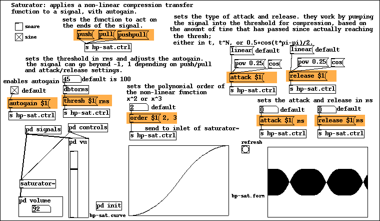
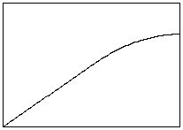
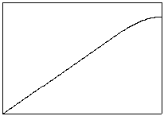
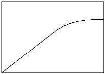
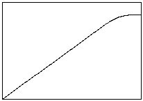

 The saturator~ external performs a nonlinear compression on the input signal based on threshold (rms), attack/release (ms), push/pull, autogain, and polynomial order (N = [2, 736]) settings. It works by deriving a polynomial tangent to y=x at some threshold between 0 and 1 where there's a maximum (peak) at x=1. It uses one of two time dependent algorithms for the attack and release.
The compressor's transfer function is a two part function where f(x)=x when x < threshold and f(x) = some polynomial function when x >= threshold. Some polynomial function can be of any order but must have a maximum at x=1.
saturator~'s polynomial functions are relatively simple. There are two cases. When N is even f(x) = -1r(x-1)^N+1-c, when it's odd f(x) = r(x-1)^N+1+c. We solve for the coefficient r and c by deriving the function's tangent with y=x at some thresh h. We can do this since f(h) = h and f'(h)=1. The latter is true because the derivative of a function solved at some point gives the m of some line y=mx tangent with the function at that point. Since y=x then m=1.
Solving for r and c with even N-polynomials gives us r=-1/ [N (x-1)^(N-1)] and c = -r(h-1)^N+1-h, while for odd it's r = 1/ [N (x-1)^(N-1)] and c= h - [r(h-1)^N+1].
|  two part quadratic transfer function with threshold at 0.5 rms |  two part quadratic transfer function with threshold at 0.75 rms |
|  two part cubic transfer function with threshold at 0.5 rms |  two part cubic transfer function with threshold at 0.75 rms |
The threshold is set with the thresh number method. The order is set with the order number method. An invalid threshold (not [0.0,1.0]) or order (below 2 or above 736) will do nothing. The limit of 736 is chosen arbitrarily. Above this value the transfer function doesn't change much.
When passing through the transfer function the signal is tested against the threshold. If it is above the threshold it is then tested for push/pull. Passing that it is then evaluated with the polynomial part of the function. If none of these conditions are met, it is left alone.
The input signal will be clipped at -1,1. If this were not the case then it would go over the peak of the polynomial function.
The code could be further optimized or adapted to work with double precision floating points (64bits).
The time dependent portion of the compression works in one of two ways. The first (default) is performed by scaling the peak (-1,1) of the original signal to the threshold and then pumping that into the compression. The second varies the working threshold from 1 to the set threshold.
First the signal is tested against the threshold. Then a factor used to scale the signal is determined. This is done in a recursive way. The factor will arbitrarily start at 1. When the signal is above the threshold a value in amplitude per time multiplied by the time since the last recursion will be added to the factor (never allowing it above 1). When the signal is below the threshold this value will be subtracted (never allowing it below the threshold).
When the factor is set to 1 then the compression will be in full force and when it's set to the threshold, there will be no compression.
In saturator~ the amplitude per time is determined in rms/ms by dividing the threshold by the duration: thresh / attack in ms and thresh / release in ms. When the duration is 0 then the factor is directly set to 1 for attack, or thresh for release. The durations are set by the methods attack number and release number.
The factor is then scaled by a one of three possible transformations. The default is a linear transformation which leaves the factor alone. The second raises the factor by some value, thresh + (1-thresh)[(factor-thresh)/(1-thresh) ] ^ param. This gives a faster rate. The third is thresh + (1-thresh) * [0.5 + 0.5 * cos((factor-thresh)pi/(1-thresh) - pi)] which gives a smooth curve, starting slower than linear but ending faster than linear. To change transformation use the method attack type (number), where type is either linear, pow or cos and number is only relevant for pow. The same works for release, release type (number).
Now one of two methods are used. The first scales the original signal by the transformed factor. This scaled signal will then run through the transfer function. Afterwards the signal is rescaled back to where it's supposed to be, by the inverse of the transformed factor.
The second methods subtracts the transformed factor from 1, adds it to the set threshold and that becomes the new working threshold. r and c are recalculated from this new threshold. autogain and the amplitude per time value are left as is; based on the set threshold. This method does more work per block than the first.
To change the TD implementation use the method cheap number, where 0 sets the expensive algorithm and any other number sets the cheap one.
More factor transformations should be devised. Perhaps a rate of change based threshold should be considered (based on transients).
The push/pull settings dictate which sign of the signal will pass through the transfer function. Push corresponds to the negative portion while pull corresponds to the positive portion. These settings are used to create asymmetrical transfer functions. For example, if pull is not set then the positive portion will not be compressed.
there are three methods to set push/pull: push, pull and pushpull
By default the object will perform an autogain. This can be disabled by the method autogain number where number is 0 to disable and any other to enable.
The autogain works by taking the result of the time dependent transfer function and dividing it by 1 - c in case of even N-polynomials and 1 + c in case of odd.